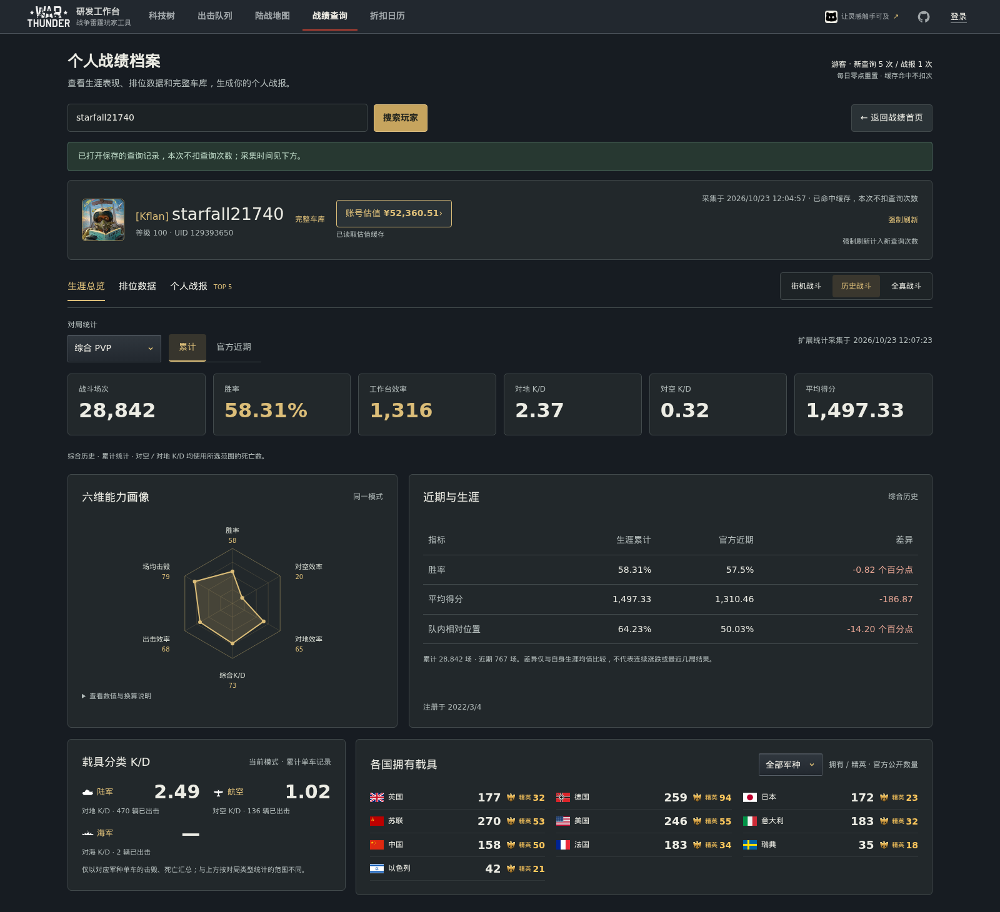
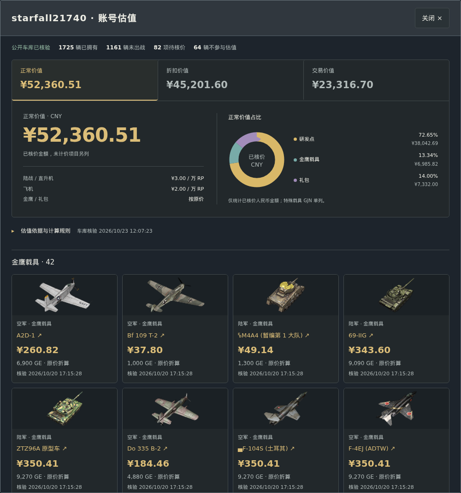
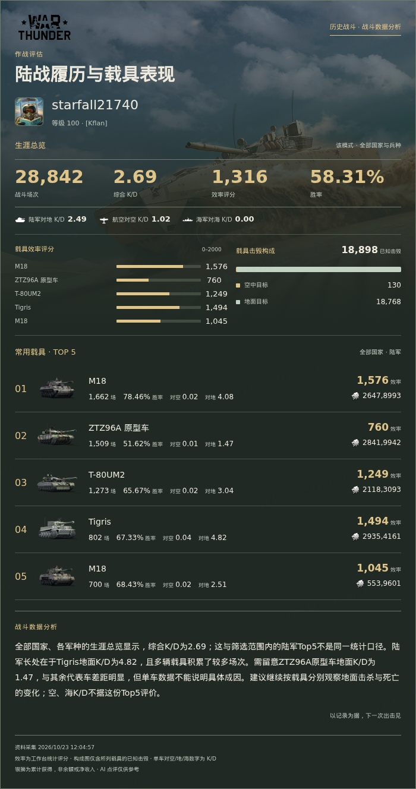
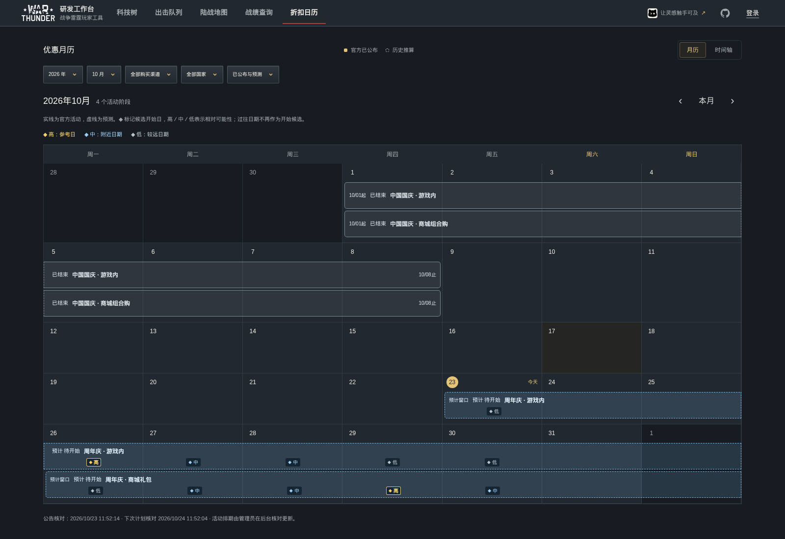

简体中文 · English · Русский · 日本語
WarThunder 研发工作台
查科技树、规划研发、配置出击队列，也能查询战绩、绘制地图走线和关注折扣。
正式站 · QMuse · 国际站 · 完整使用说明
科技树与载具资料
覆盖十国陆军、空军、直升机、远洋海军和近岸海军。支持名称搜索、AB / RB / SB 权重切换、折叠组展开与缩放，沿连线查看必要前置关系。
载具详情展示官方图片、获取与价格、三种模式的研发点／银狮收益倍率及前置路线。中文研发点按“万”缩写，缩放偏好自动保存在当前浏览器。

载具研发
选择目标，填写已有载具、已开放等级和目标进度。清单会列出必要前置及等级补位；合并多个目标时，共用前置只计算一次。

配件研发
按真实等级和栏目查看配件，勾选已完成项目，再填写未完成配件中的部分进度。礼包、金鹰等高级载具默认按已解锁全部配件处理。

估算金额 = 剩余研发点 ÷ 10,000 × 自填单价。 这是自定义换算，不是游戏官方售价或交易报价；未知数据不会按零计算。
出击队列
按国家保存多套配置，调整乘员槽位顺序，结合模式与权重检查阵容。队列名称旁可复制分享码，队友导入后保留国家、载具和槽位顺序；新建与编辑只有保存后才生效。

战绩查询与官方排位
按游戏昵称查询公开资料，查看生涯与官方近期统计、六维能力、分军种 K/D，以及载具类型和游玩时长。排位数据使用独立子页，展示官方指标与名次。
单车记录支持筛选、排序和分页，可在表格与四列卡片间切换，展示偏好保存在本地。有效缓存优先复用，额度和资料时间以页面提示为准。

完整车库与账号参考价值
登录并关联游戏账号后，在“出击队列 → 我的车库”查看已拥有载具，包括从未出击的车辆。科技树上的黑桃表示已拥有，载具研发会跳过这些车辆；黑桃不代表配件全满。
账号估值按已拥有载具展示研发点、金鹰、礼包等分项，可切换估值口径。缺少已核实价格的项目另列，参考金额不代表官方定价或实际成交价。

个人战报与单车卡片
按国家、兵种和模式整理 Top 5 载具，搭配战雷背景与头像生成个人战报。AI 点评可选司令致辞、战斗分析、犀利评价或自定义语气。
单车记录可生成独立战绩卡片，选择二战、冷战、现代背景，并复制或下载图片；导出图片在浏览器合成，不上传保存到服务器。

陆战地图与走线绘制
搜索地图、切换任务布局和己方队伍，查看等高线、出生点与占领点。攻略入口保留原帖，方便对照不同版本的地图。
走线编辑支持箭头、曲线、防御阵线、危险区域、战术标记与文字。可保存多套方案，撤销或重做，并导出 2K / 4K 图片或可继续编辑的绘图文件。

折扣日历与载具关注
关注金鹰和商城礼包载具，分别查看原价与整包人民币价格。月历和时间轴展示活动范围、公告来源，以及尚未过期的预计开始窗口。
已公布活动与历史预测分开展示，候选日期区分相对置信度。预测仅供参考，参与载具、排除名单及实际时间以当次官方公告为准。

语言与保存
- 国际站支持简体中文、English、Русский、日本語；正式站以中文为主。截图为中文界面，各图拍摄日期见截图清单。
- 游客的研发进度、购物车和出击队列保存在当前浏览器；登录后，研发计划、研发购物车和队列可跨设备同步。
- 地图方案与折扣关注保存在本地，请按需导出备份。查询公开游戏资料不需要 Gaijin 密码。
使用说明与反馈
完整使用说明 · 截图与来源 · 本地开发与贡献 · 反馈问题
数据来源与版权声明
- 数据来源：科技树、载具与配件、战绩、商城价格、地图等游戏基础资料，整理自战争雷霆官方 Wiki及官方公开渠道，包括游戏公开资料、战绩服务、Gaijin 官方商城和公开游戏资源。社区攻略、历史折扣整理等补充资料保留各自出处。
- 非官方项目：本工具由玩家独立开发，与 Gaijin Entertainment 无隶属、合作或官方背书关系。数据和展示可能随游戏版本变化，以游戏内资料及官方公告为准；估值、预测和工作台效率分属于本工具的参考结果。
- 权利归属：War Thunder 名称、商标、Logo、游戏图像、地图、原始游戏资源及第三方资料归 Gaijin Entertainment 或相应权利人所有，本项目不主张其所有权。本仓库的 MIT 许可证适用于原创代码，不构成对第三方内容的再次授权。
- 权利人联系：如相关内容涉及您的合法权益，请通过 GitHub Issues提供具体页面／文件位置、权属说明及处理诉求。核实后将及时更正、替换或移除相关内容。